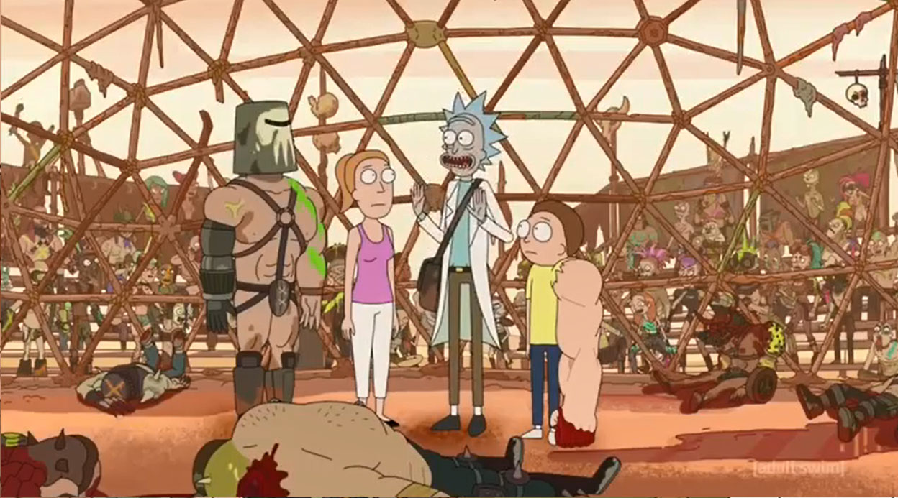

Rick's Aftermath
An essay of Rick and Morty's new episode "Rickmacing of the Stone". In this essay I explore the aftermath of Rick's action in "Rickshank Redemption". I warn you this article contains spoilers
In the last episode, we saw Rick escaping the Federation.
Destroying them, the Council of Ricks and his daughter marriage all in the process.
In this new episode, we see the aftermath of Ricks actions on his family.
Jerry's leaving the house, Morty and Summer are processing the divorce,
Beth's uncertain of her decision, and Rick's not giving a fuck like usual.
The episode shows Morty and Summer breakthroughs of the situation. Having some occasional clues of the other characters state.
On this adventure, Morty and Summer go on separate killing sprees that help the cope and understand. Morty goes on an adventure for vengeance with his mutated left arm and Summer is trying to find herself in this apocalyptic world.
Later on the episode, while in an arena of sorts called the "Blood Dome". Morty says:
"I have nothing to do with this. Why would you want this to happen? All you had to do was go away and not stand in the drive way talking about custody. And either tell her you want to stay married or get on with your life, or whatever you do. Stop being a baby and act like a man", while killing a bandit.
And "Who else wants some? Who wants to be my pussy of dad today?"
He know Morty feels disappointed with his dad. He feels like Jerry could have his life back if he had the courage to do it.
Summer's way of coping with the separation is making bad decisions. In the episode, she falls in love with Hemorrhage, the new leader of the cannibal bandits. She's trying to replace her dad with a new manly figure, but Hemorrhage ends being just another disappointment.
Meanwhile, Rick left his grand kids in this apocalyptic setting. And he his home trying to assure Beth the divorce was a great decision not just for her, but for her kids too. This ends up backfiring since the robots he created, to replace Morty and Summer in their absence, make her call Jerry.
In the end, every character comes to his own conclusion Morty knows if his father wanted to come back he could. Summer understands that relationships don't always work and ask her mom if she can go visit her dad. And Rick gets that he is dealing with the situation in an unhealthy way and he is putting his grand kids in a tough spot.
If you liked please visit my Medium blog. And comeback for more. I hope everybody enjoyed.
- Pedro Santana.